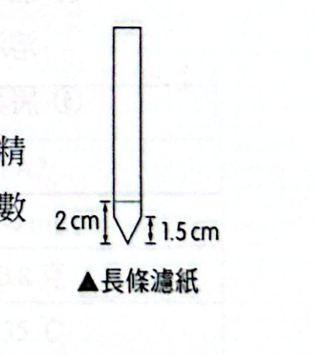

光合色素之層析分離
目的：利用簡易的濾紙層析方法，分離與檢定光合色素的種類。
步驟：
- 製備展開液：以石油醚：90% 丙酮＝9:1、8:2、7:3 三種比例配製展開混合液，用鋁箔紙包住瓶口（防揮發）。
- 滴葉汁於長條濾紙上：濾紙一端約 1.5 cm 處剪成尖形箭頭；在距尖端 2 cm 處，以硬幣或鐵尺直線方式精準地按壓葉片，畫出綠色線條，待汁液風乾後重複數次，使呈深綠色線條。
- 展開光合色素：濾紙放入盛有展開液的量筒中，注意浸入展開液的濾紙不要超過 1 cm（色素點不可浸到展開液）；濾紙露出量筒的一端下折，以鋁箔紙封住量筒口（密封）；當混合液上升至濾紙全長的 90% 時，觀察並記錄色素分布。
- 比較 Rf 值：
Rf 值 ＝ 色素上升距離 ÷ 展開液上升距離（Rf 一定 ≤ 1）

光合色素層析的步驟（長條濾紙與量筒裝置）
結果：
- 色素由上而下的順序：橙黃色（胡蘿蔔素）、淡黃色（葉黃素）、深綠色（葉綠素 a）、淡綠色（葉綠素 b）。
- Rf 值：胡蘿蔔素 ＞ 葉黃素 ＞ 葉綠素 a ＞ 葉綠素 b。
光反應的還原作用（希爾反應）
目的：利用氧化還原指示劑 DCPIP，證實葉綠體於光反應中有釋放電子的現象。
背景：1937 年，植物生理學者希爾發現：將葉綠體分離後置於試管中，假若在試管中加入適當的「氫接受者」，如二氯酚靛酚（DCPIP；氧化態為藍色，還原後為無色），照光也會使水分解並放出氧，此反應稱為「希爾反應」。
DCPIP（藍色）＋ H₂O → DCPIPH₂（無色）＋ ½O₂（光、葉綠體）
步驟：
1. 切碎菠菜葉，以果汁機攪碎：10 g 新鮮菠菜葉切碎＋ 0.5 M 蔗糖溶液 20 mL，低速攪打 20 秒（蔗糖溶液與葉綠體等張，避免葉綠體脹破）；
2. 過濾葉汁、製備葉綠體溶液：4 層紗布過濾 → 離心（3000 rpm、5 分鐘）→ 倒除上清液，保留沉澱物 → 加 0.5 M 蔗糖 5 mL 懸浮 → 置於冰箱備用；
3. 備妥 A、B、C、D 四支試管：
|
A 試管 |
B 試管 |
C 試管 |
D 試管 |
| 0.5 M 蔗糖溶液 |
4 mL |
5 mL |
4 mL |
5 mL |
| 0.1% DCPIP 溶液 |
0.5 mL |
0.5 mL |
0.5 mL |
0.5 mL |
| 葉綠體溶液 |
1 mL |
－ |
1 mL |
－ |
| 光照處理 |
照光 |
照光 |
黑暗（包鋁箔） |
黑暗（包鋁箔） |
- 離心四支試管，比色並記錄。
結果：
|
A 試管 |
B 試管 |
C 試管 |
D 試管 |
| 葉綠體 |
有 |
無 |
有 |
無 |
| 光照處理 |
照光 |
照光 |
黑暗 |
黑暗 |
| 顏色深淺 |
＋（最淺，DCPIP 被還原褪色） |
＋＋＋（最深） |
＋＋ |
＋＋＋（最深） |
怎麼看：
- A（有葉綠體＋光）：葉綠體在光下釋出電子，DCPIP 被還原而褪色 ⇒ 顏色最淺；
- B（無葉綠體＋光）：沒有葉綠體，DCPIP 不會被還原 ⇒ 藍色最深（對照組）；
- C（有葉綠體＋黑暗）：沒有光，光反應無法進行，只有少量褪色；
- D（無葉綠體＋黑暗）：對照組，藍色最深。
影響酵母菌發酵的環境因子
原理：酵母菌進行酒精發酵會產生 CO₂，比較同樣時間內累積的 CO₂ 產量，就可以比較在相同控制變因下各組酵母菌發酵的相對速率，了解溫度、醣的種類、酸鹼度、乙醇等四種環境因子是否影響發酵速率。
| 操作變因 |
設計重點 |
| 溫度 |
10% 葡萄糖溶液 30 mL＋酵母粉 0.8 g，室溫 vs 35 °C |
| 受質（醣的種類） |
10% 葡萄糖／蔗糖／澱粉溶液各 30 mL＋酵母粉，35 °C |
| 酸鹼度 |
pH 5、7、9 緩衝溶液 30 mL＋葡萄糖 3 g＋酵母粉，35 °C |
| 乙醇 |
葡萄糖溶液 26 mL＋蒸餾水／25% 乙醇／95% 乙醇各 4 mL＋酵母粉，35 °C |
結果：
1. 35 °C 環境下的發酵速率比室溫快；
2. 酵母菌在澱粉中的發酵速率最慢（酵母菌不能直接利用澱粉）；
3. 酵母菌在 pH＝5 的環境下發酵速率最快；
4. 乙醇濃度提高會抑制發酵作用。
經典演練
下圖為進行光合色素的層析分離實驗時，某同學的實驗結果，他將層析而出的色素用鉛筆做記號，關於此實驗的方法與結果推論，下列敘述何者正確？
(A) 在進行層析之前，要以 0.5 M 的蔗糖溶液萃取葉片的色素 (B) 在圖中可以觀察到的色素由上而下為葉綠素 a、葉綠素 b、胡蘿蔔素、葉黃素 (C) 此實驗使用不同種類的綠色葉片不會影響色素展開的順序與高度 (D) 色素展開的原理是跑愈高的色素分子量愈小，位於低處的色素分子量愈大
看答案與詳解收起
答(C)
解
- (A) ✗ 萃取色素用丙酮（0.5 M 蔗糖是做葉綠體懸浮用的等張溶液）。
- (B) ✗ 由上而下是胡蘿蔔素、葉黃素、葉綠素 a、葉綠素 b。
- (C) ○ 各色素的 Rf 取決於色素與展開液、濾紙的性質，不隨葉片種類改變，所以展開順序與高度的比例相同（顏色深淺才會因含量而異）。
- (D) ✗ 展開原理看的是溶解度與濾紙親和力，不是分子量。
某生利用色層分析分離法進行葉片中的葉綠素 a、葉綠素 b、胡蘿蔔素及葉黃素等光合色素的分離實驗。(1)～(5) 是重要的操作步驟如下：(1) 以 70 °C 烘乾菠菜葉片，再用研缽磨成粉狀；(2) 加入 10% 丙酮研磨至泥狀，用濾紙過濾，取濾液待用；(3) 取一長條濾紙，將前端 1.5 公分剪成尖形；(4) 用毛細管吸取濾液，將濾液點在離濾紙尖端 3 公分處，重複數次；(5) 將濾紙放入裝有展開液（石油醚：丙酮＝10：1）的量筒內，經密封、靜置後，觀察並比較光合色素的上升及分離情形。根據以上的實驗操作步驟過程及結果，下列敘述哪些正確？（多選）
(A) 量筒內展開液的高度應超過色素點的位置，以利色素展開 (B) 量筒要密封是為了使濾紙上的溶液飽和並避免蒸發 (C) 若改變展開液的成分，光合色素相對擴散值 Rf 值也會隨著改變 (D) 實驗中，濾紙上顏色最深綠的是葉綠素 a (E) 實驗後，所得到的光合色素相對擴散值 Rf 值以葉綠素 b 最大
看答案與詳解收起
答(B)(C)(D)
解
- (A) ✗ 展開液高度要低於色素點，否則色素溶進展開液。
- (B) ○ 密封使濾紙周圍的展開液蒸氣飽和，避免揮發。
- (C) ○ Rf 由色素與展開液的溶解度決定，換展開液 Rf 會變。
- (D) ○ 葉綠素 a 含量最多，帶最深綠。
- (E) ✗ Rf 最大的是胡蘿蔔素；葉綠素 b 最小。
為了了解光合作用中光反應的還原作用，某生利用 0.5 M 蔗糖溶液從菠菜分離出葉綠體後，於 A～D 試管中進行希爾反應；各試管的實驗內容與處理如下表所示：A：葉綠體懸浮液 1 mL、DCPIP 0.5 mL、蔗糖 4 mL、照光；B：葉綠體 0、DCPIP 0.5 mL、蔗糖 5 mL、照光；C：葉綠體 1 mL、DCPIP 0.5 mL、蔗糖 4 mL、遮光；D：葉綠體 0、DCPIP 0.5 mL、蔗糖 5 mL、遮光。
下列有關此實驗的敘述，哪些正確？（多選）
(A) DCPIP 轉變為 DCPIPH₂ 是一種氧化作用 (B) 0.5 M 蔗糖溶液是葉綠體的等張溶液 (C) 用雙層紗布過濾磨碎的菠菜葉汁，以獲得葉綠體懸浮液 (D) A 試管實驗的對照組只有 B 試管 (E) C 試管實驗可以省略，不會影響結論
看答案與詳解收起
答(B)
解
- (A) ✗ DCPIP 變成 DCPIPH₂ 是還原（獲得電子／氫）。
- (B) ○ 0.5 M 蔗糖與葉綠體等張，避免脹破。
- (C) ✗ 紗布只過濾殘渣；要得到葉綠體須再經離心取沉澱。
- (D) ✗ A 的對照組有 B（無葉綠體）、C（無光）、D。
- (E) ✗ C 是「有葉綠體、無光」的對照，證明光是必要條件，不能省。
下列有關此實驗的結果或推論，哪些正確？（多選）
(A) A 試管與 C 試管的呈色狀況不相同 (B) A 試管中葉綠體未釋放電子 (C) 光強度不會影響實驗的反應 (D) 綠光當作光源時也可促進反應 (E) 若以不同波長的色光當作光源時，則以紅光和藍光的處理最有效率
看答案與詳解收起
答(A)(E)
解
- (A) ○ A（光下）DCPIP 被還原褪色；C（無光）幾乎維持藍色。
- (B) ✗ A 褪色就是因為葉綠體釋放了電子。
- (C) ✗ 光強度會影響光反應速率，也就影響褪色速度。
- (D) ✗ 葉綠素對綠光吸收最差，綠光效率最低。
- (E) ○ 作用光譜顯示紅光、藍紫光最有效率。
圖㈠為試管中不同培養階段之酵母菌族群數量、葡萄糖濃度和酒精濃度的變化曲線（時間軸有 T₁、T₂、T₃；酵母菌族群曲線依序經過 A、B、C、D 四點），圖㈡為酵母菌的呼吸作用：葡萄糖 →①→ 丙酮酸 →（有氧呼吸：H₂O、CO₂；發酵作用：②、③）。
(1) 根據圖㈠中酵母菌族群數量的變化，可將酵母菌生長分為三個階段：曲線 AB、曲線 BC、曲線 CD，酵母菌在哪些階段的族群成長為正成長？
(2) 酵母菌的呼吸作用可以圖㈡的式子表示，①代表有氧呼吸與發酵作用共同的第一階段作用，②③代表酵母菌行發酵作用所產生的兩種物質，①～③應分別填上什麼名稱？
(3) 承上題，酵母菌的呼吸作用可因應酵母菌的需求，由有氧呼吸轉換為進行發酵作用，請判斷酵母菌在圖㈠中的哪個時間點開始進行發酵作用？
(4) 葡萄糖濃度在 T₁～T₂ 階段劇烈減少，若與酵母菌的呼吸作用有關，應該是如何造成的？
看答案與詳解收起
答(1) AB、BC (2) ① 糖解作用、② 乙醇（酒精）、③ 二氧化碳（②③ 順序可互換） (3) T₁ (4) 酵母菌進行發酵，每分子葡萄糖只產生 2 ATP，需分解大量葡萄糖才能得到足夠的能量，同時族群數量增加
解
- (1) 族群數量在 AB、BC 階段上升＝正成長；CD 數量下降＝負成長。
- (2) ① 糖解作用；發酵產物＝乙醇＋CO₂。
- (3) 酒精濃度從 T₁ 才開始上升，代表酵母菌從 T₁ 起開始酒精發酵（氧氣被耗盡）。
- (4) 發酵的能量效率低，每分子葡萄糖僅 2 ATP（有氧呼吸約 30～32 ATP），要維持族群快速增殖所需能量，必須分解大量葡萄糖。